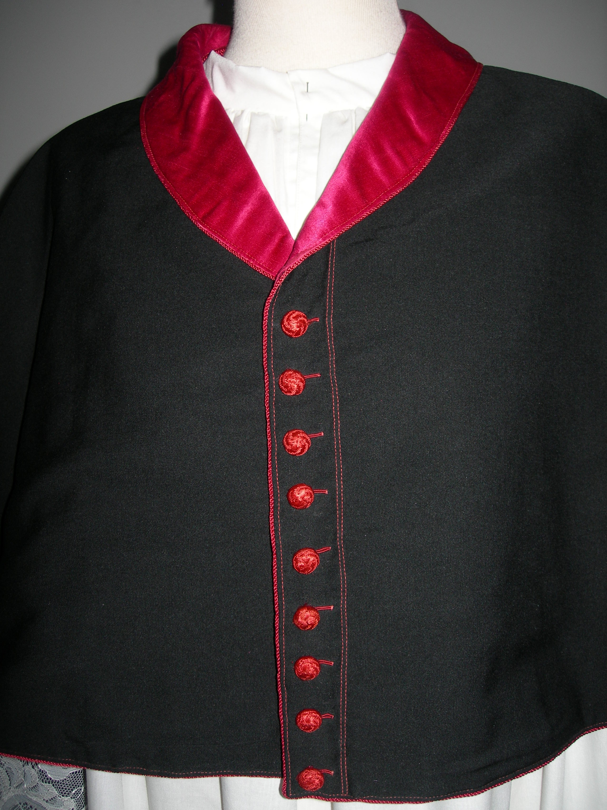
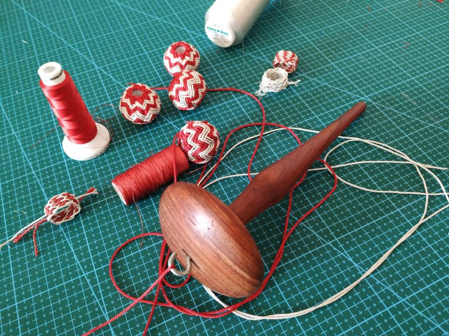
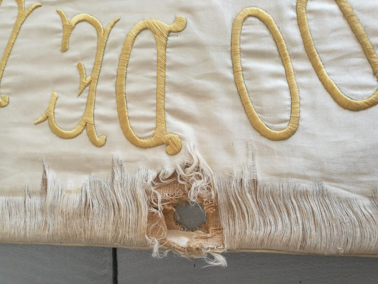

Bordados en oro
Nuestros trabajos de bordado en oro son unicos en diseño y em tecnicas de bordado, dando mucho mimo a cada detalle.
Bordados en oro

Bordados Infantes es un taller de ornamentos para la liturgia y aderezo de imagenes de
culto totalmente artesano y con más de 25 años de vida. Trabajamos de forma tradicinaI nuestras
prendas, poniendo todo esmero y cuidado para conseguir las mejores
resultadosen nuestros trabajos.

Sastreria
Sastreria en trabajos finos, a medida y con cualidades únicas
Sastrería
Como complemento a la realización de nuestros bordados para la liturgia nade nuestra
sastreria clerical. Trabajados a medida de forma tradicional y artesanal y con un resultado
impecable, Nuestro trabajo constante de invesigación, recuperacón de prendas y
accesorios para clerigos de varias diocesis, nos hace ser unicos en nuestro campo en el
territorio español.

Cordonería
Nuestras mejoras borlas y cordones para tus necesidades.
Cordonería
Nuestras borlas y cordones, realizados totalmente a mano, están inspirados en la antigua pasamanería
de siglos pasados. Además de realizar copias ofrecemos nuestro servicio de piezas nuevas.

Iconos bizantinos
Formas con iconos bizantinos y religiosos como novedad dentro del bordado en España
Iconos bizantinos
Desde hace un tiempo, por curiosidad y por aprender otras formas de bordado me decidí a hacer un curso
on line de bordados de iconos rusos con Elena. La experiencia ha sido muy particular, contando
con trabas tan importantes como el idioma. Al final, gracias a la ayuda de Elena he podido
hacer cosas tan interesantes como estas.

Restauración textil
Una parte de la parte del trabajo de cualquier artesano es su dedicación a la amiración de trabajos de sus antecesores y por lo tanto para mi , un honor el poder rescatar viejos trabajos y poder restaurarlos.
Restauración textil
Conscientes de lo que significa la restauración de textiles que forman parte de nuestro patrimonio,
ponemos en marcha nuestro taller de restauración/conservación especializado. Nuestro personal está
perfectamente cualificado para realizar labores de asesoramiento y conservación preventiva; todas
nuestras intervenciones constan de informes técnicos así como orientación en pautas de conservación.
Estamos especializados en todos los formatos textiles tanto tejidos planos como en indumentaria.